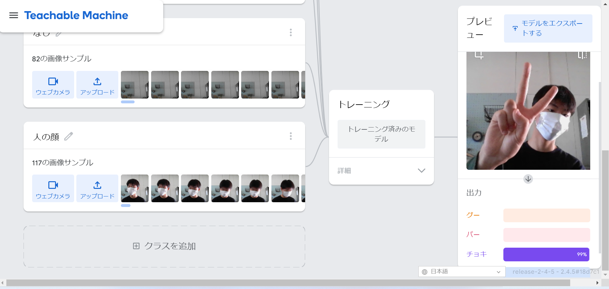

第2週目
2-1 １週目のレポートをHTMLで作る
１週目のレポート
1.内容
1週目のレポートを作成した。スクラッチで作成したサイエンスアート・ゲームについてと、自分のホームページについて書かれている。
2.感想
書き込む画面と見る画面が違うレポートもあるのだと知った。テンプレートがあって助かった。
2-2 機械学習体験

1.内容
グー・チョキ・パー・人の顔・何も映っていないときの写真を何枚かとり、機械に学習させた。
その後、カメラに向かってグーなどをだすと何をだしているのか瞬時に判別するようになった。
2.感想
人の顔のときにグーと判別されたり、チョキなのにパーと判別されることがあったので、もう少し写真を多くとっておけばよかったと思った。
パソコンのカメラをいつ使うのか疑問だったから、どういうときに使うのか知れてよかった。
2-3 VR（バーチャルリアリティー：Virtual Reality）の体験
1.内容
VRゴーグルを使ってバーチャルリアリティーを体験した。自分たちは眼鏡をかけたアバターだった。
2.感想
土井先生のアバターがきたとき、結構本人に似ていて驚いた。コントローラーを持つときに誤ってボタンを押してしまい焦った。家に欲しいと思った。